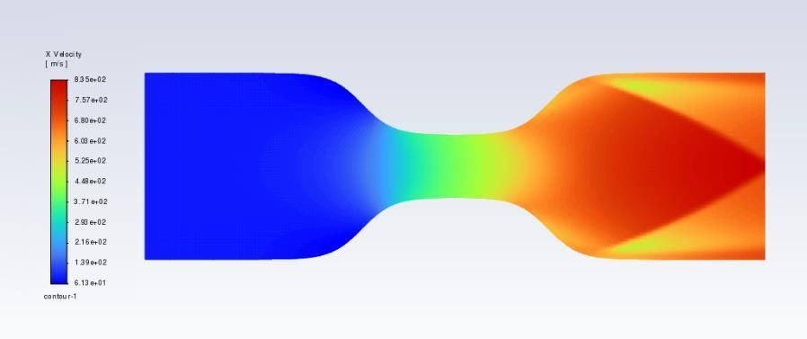
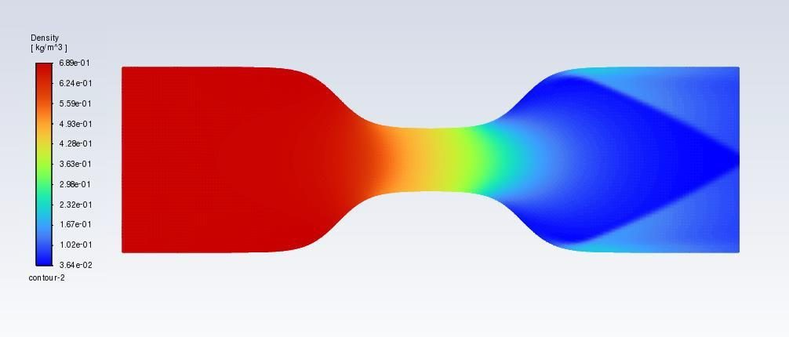
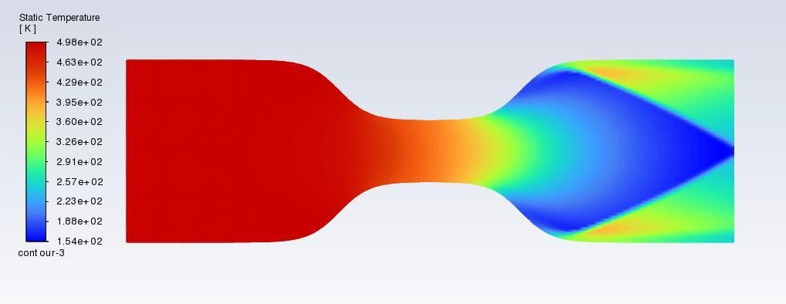
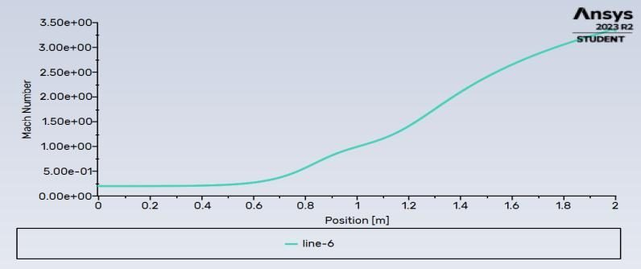
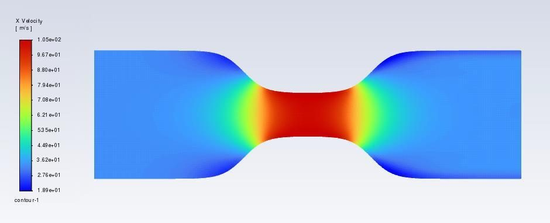
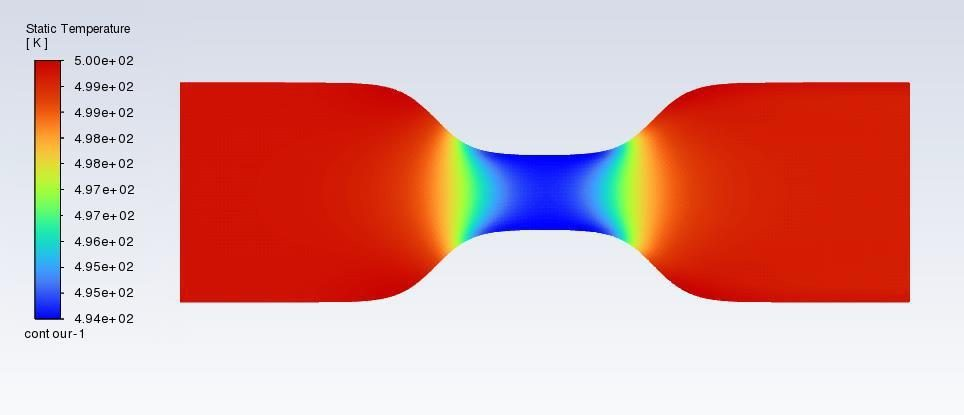
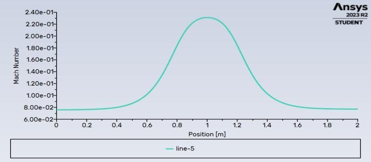

Fluid & Thermal
Converging-Diverging Nozzle: Subsonic to Supersonic Flow
2D compressible flow through a nozzle, from fully subsonic to supersonic as the pressure ratio changes.
- Category
- Fluid & Thermal
- Tools
- Ansys Fluent
- Context
- Arizona State University
Overview
A converging-diverging nozzle was modeled in 2D and solved with a density-based solver and the ideal gas law. Inlet and outlet pressures were changed to move the flow between subsonic and supersonic regimes.
Setup and method
- Build the nozzle geometry and set boundary conditions, initial conditions and solver settings for both regimes.
- Density-based solver with ideal gas; inviscid or turbulent model as appropriate.
- Plot velocity, temperature, density and Mach number as contours and as line plots along the axis.
- Interpret the transition against compressible-flow theory.
Results
In the supersonic case, the Mach number along the axis climbs past 3 and an oblique shock pattern appears downstream of the throat. In the subsonic case, it rises to about 0.23 at the throat and falls back.
Figures







Next project: Compressible Air Jet from a Pressurized Chamber →